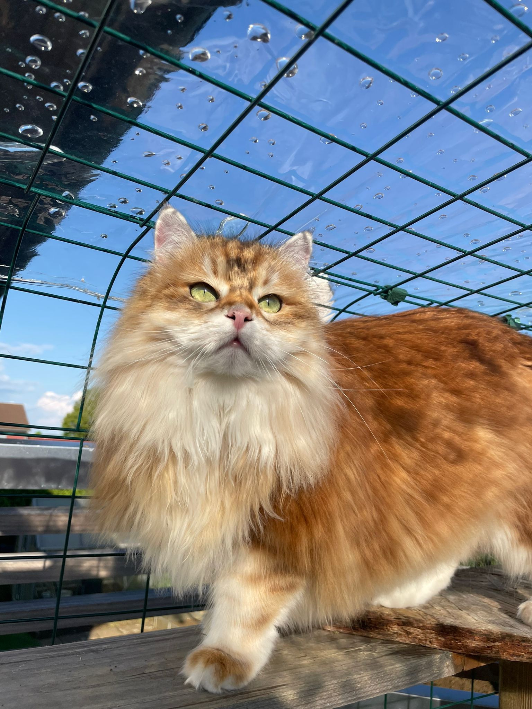
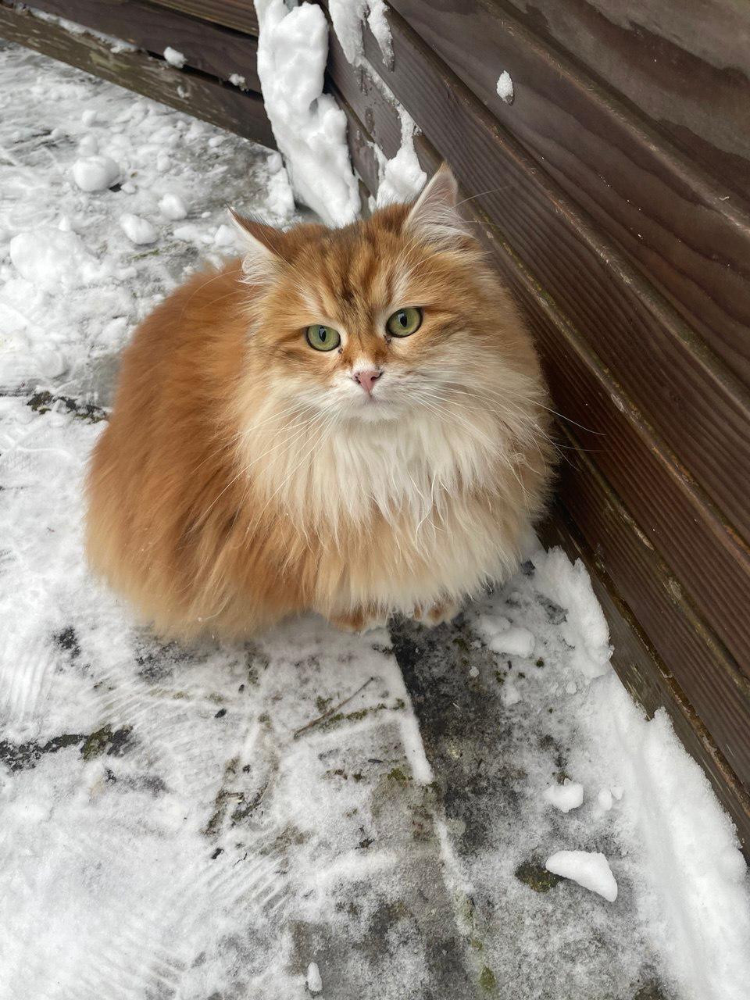

Sie ist ein Sibirische langhaar Katze mit Rot/Orangenem Fell. Sie ist sehr scheu und schreckhaft.
Zuletzt gesehen wurde sie um circa 16 Uhr im Finkenweg. Sollten Sie Yuna gesehen haben, melden Sie sich bitte umgehend bei uns.